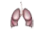

Plantilla:Efemérides-Mes-1
De:
La Frikipedia
, la enciclopedia
extremadamente
seria.
Septiembre
Día internacional de la alfabetización
8 de septiembre

Semana europea del cáncer de pulmón
10 de septiembre
Día internacional de la preservación de la capa de ozono
16 de septiembre
Día internacional por la paz
21 de septiembre
Día mundial del corazón
25 de septiembre
Autor(es):
Shadowmura
Frikipedia 2005-2016, Licencia
GFDL 1.2
- Extraído por FrikiLeaks
 De: La Frikipedia, la enciclopedia extremadamente seria. De: La Frikipedia, la enciclopedia extremadamente seria.
De: La Frikipedia, la enciclopedia extremadamente seria. De: La Frikipedia, la enciclopedia extremadamente seria.